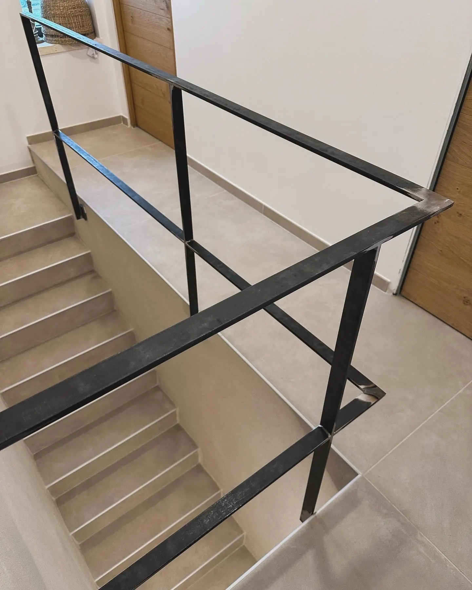

Portfolio
Réalisations
Un aperçu de nos ouvrages : garde-corps, escaliers, verrières, portails et clôtures, conçus et fabriqués sur mesure pour des particuliers et des professionnels.




D'autres réalisations seront ajoutées au fur et à mesure — n'hésitez pas à nous envoyer vos photos de chantiers récents.
Votre projet mérite le même soin
Parlons de vos envies, de vos contraintes et de vos délais.
Nous contacter